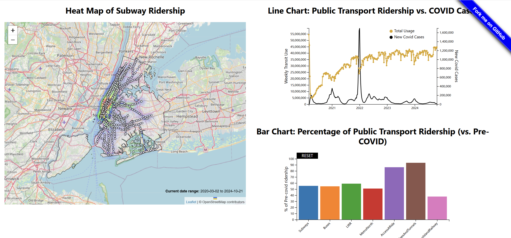
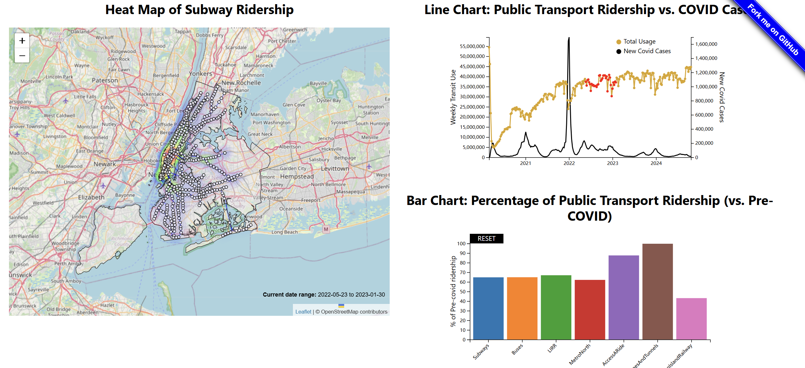
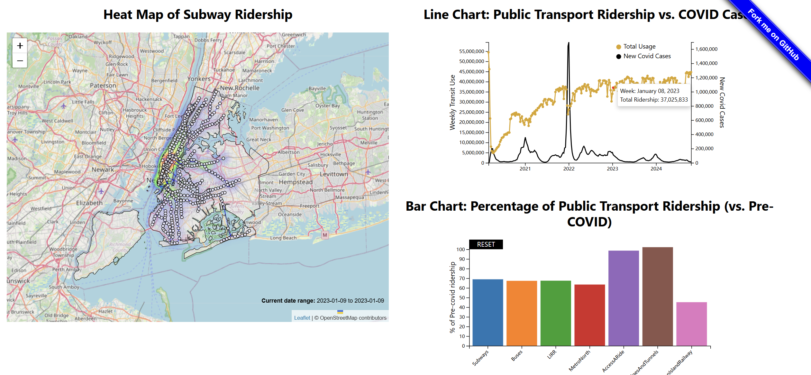

Demo Video
Embedded MP4 demo video using the HTML5 <video> tag. For example, this screen recording Prof. Cody Dunne made of Mike Bostock's flexible transitions in D3 slide:
Visualization explanation
Final visualization screenshots (PNG images), design justifications, UI walk-through, and linked presentation slides.
Our final visualization is made with a combination of three visualizations, a heat map showing the subway ridership from March 2020 to October 2024, a line chart showing the public transportation ridership and COVID cases in New York from March 2020 to October 2024, a barchart showing the different types of transportation in New York as percentage in comparison to pre-COVID era. When clicking on the different types of transportation on the barchart, the corresponding line with the same color as the bar will be shown on the line chart to give the clear presentation of the impact of COVID crisis on that chosen type of transportation.
When selecting and brushing the points on the line chart, the selected points will be highlighted as red and the barchart will reflect the average percentage of various types of public transportation over that period of time. In addition, the heatmap will also reflect that time period of subway ridership. Meanwhile, the selected period will also show its detailed time on the line chart.

On the above graph, we can see that when hovering over a station point on the heatmap, the detailed data will show on the graph. In addition, when clicking or brushing over a single point on the line chart, the detailed data will also be displayed on the graph.
Data Analysis
The data for the heatmap came from two sources. Subway ridership true for subway ridership from July of 2020 onward and Turnstile data for early 2020, for turnstile data that was converted into ridership data. This was done by subtracting the minimum entry value from the minimum of the previous day for each unit, ignoring negative values. Then, station names were converted to be consistent with the naming convention for the later data, and the two datasets were appended in excel. The data for the general ridership used in the bar and line chart came from https://data.ny.gov/Transportation/MTA-Daily-Ridership-Data-Beginning-2020/vxuj-8kew and required, no extra processing was necessary.
Task Analysis
Our domain task is to show ridership of public transportation changes over time, show ridership of subway in a heat map, show ridership change over time and compare to covid stats, breakdown rider demographics. We decided to primarily use our visualization to present the data around our tasks with potential to discover meaningful insight. With the heatmap, we are able to show the ridership usage, especially the subway ridership, in New York city over the past 4 years of COVID and the location where the subway is mainly used which fulfill our task of showing the ridership of subway and rider demographics. With the line chart, we are able to show the ridership changes of public transportation usage over the past 4 years and with the line of COVID cases in New York over the past 4 years, the task of presenting and exploring the relationship between the trend of public transportation and public health crisis. The barchart was not initially aligned with our previous goal and task specifically; however, it is designed to show more clear compare and contrast of the usage of public transportation with pre-COVID time. Overall, all three visualizations in combination give a comprehensive presentation of our data and are aligned with our domain tasks.
Design Process
Our final visualization consists of three graphs which include a line chart, a bar chart, and a heat map. The initial dataset has data of different types of public transportation ridership in New York state daily from the beginning of 2020 till today. It provides two types of data which include the ridership number and the percentage of the current ridership compared to pre-COVID ridership. In order to better demonstrate the data in the dataset, we decide to make a line chart to show the trend of changing in ridership for public transportation; however, because the dominance of subway ridership in the dataset, if we put all different types of ridership data in line chart, some of the types of ridership will be almost unrecognizable. Therefore, we use the sum of all riderships for different types of public transportation. Hence, to show the different types of public transportation’s recovery and how much is affected by the COVID, we decided to add a bar chart to show the percentage of the current ridership compared to pre-COVID data. After we are finished with the main dataset, we decided that because we are making correlations between public transportation and COVID, we should add another line in the line chart demonstrating the current COVID cases in New York state to compare these two data for better observations. In addition, we want to show the shift in the interest in the usage of public transportation within New York city. In order to complete this task to show which part of the city still sticks to the habit of using public transportation after the COVID and which part chooses to use other ways of transportation, we make a heat map of New York city’s subway ridership by station. The choice of subway is due to the fact that although the usage of subway ridership declined dramatically after COVID hit, the total ridership of subway is still much larger than other types of public transportation combined together. In addition, the subway line also makes a very good looking visualization and can clearly demonstrate the different parts of the city in the usage of public transportation.
Conclusion
For this project, we have done the three visualizations, one heat map, one line chart, and one bar chart as we expected. The combination of these visualizations clearly shows the outbreak of COVID significantly impacts the overall usage of public transportation especially for a huge city with well-built infrastructure like New York. We believe our project can give meaningful insight for the transportation department in government about the future development of public transportation. They would be able to decide which type of transportation should be more developed. To further develop our project in a more meaningful way, we can incorporate the living standard of residents such as incomes, housing price, and accessibility of public transportations to further the understanding of who actually uses public transportation. We can see even during the apex of COVID crisis, who still stick to public transportation and who find the supplement way of transportation themselves. In addition, because public transportation is such a convenient way of living and such a complex and comprehensive matter, we can also examine more potential aspects that affect it such as, how many tourists are actually contributing to the usage and how many changes in politics and other aspects affect its usage. Thus, more meaningful visualizations and more meaningful insights would be made thereafter.
Acknowledgments
List here where any code, packages/libraries, text, images, designs, etc. that you leverage come from.
- D3: Data-Driven Documents by Mike Bostock.
- Pure CSS responsive "Fork me on GitHub" ribbon by Chris Heilmann.
- Leaflet by Volodymyr Agafonkin and OpenStreetMap contributors
- Leaflet Heatmap Overlay by Patrick Wied
- ChatGPT for data conversion and manipulation codes